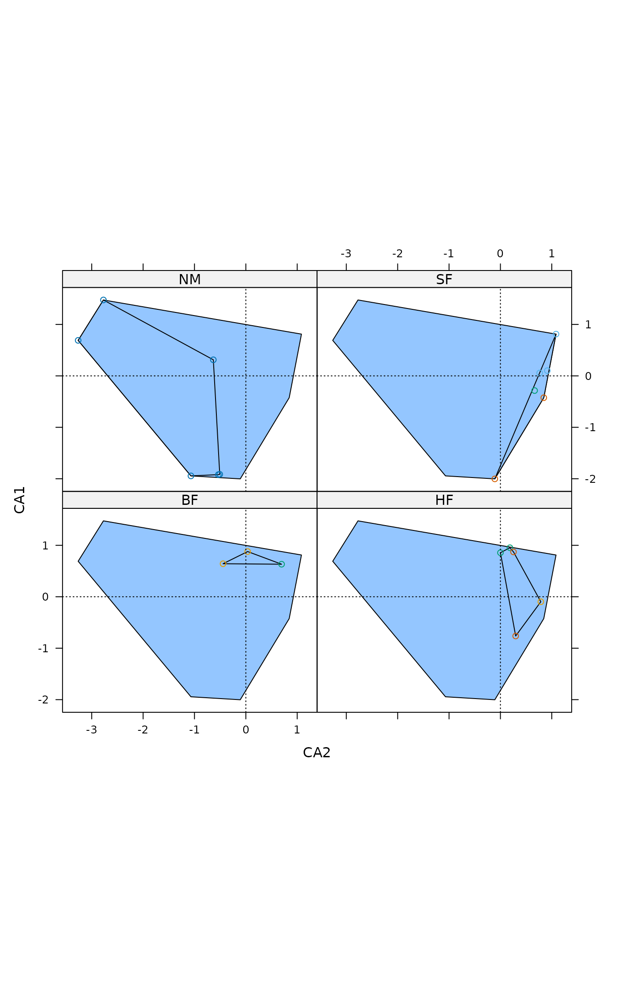
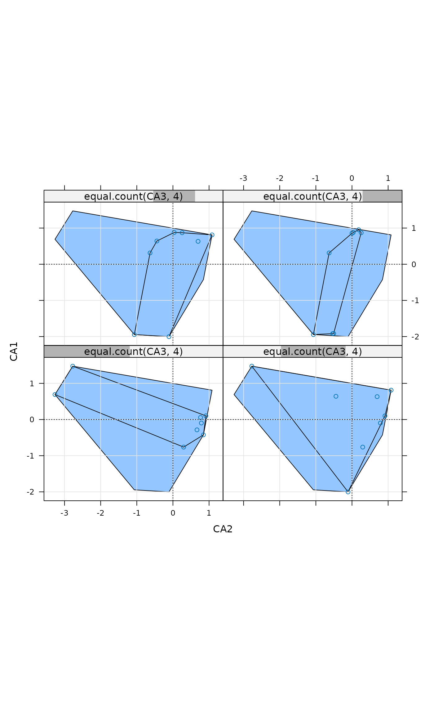
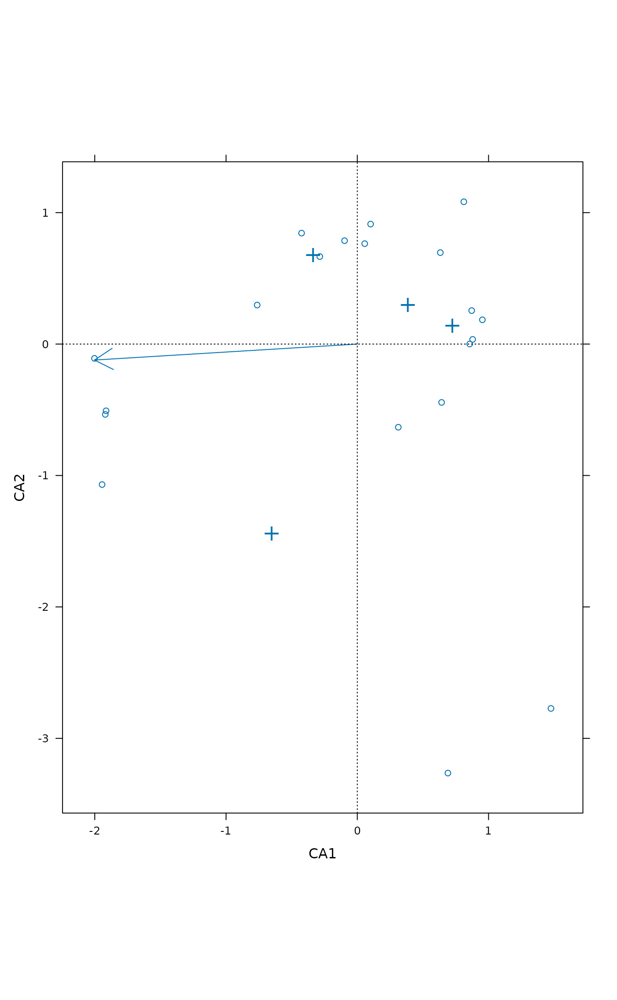
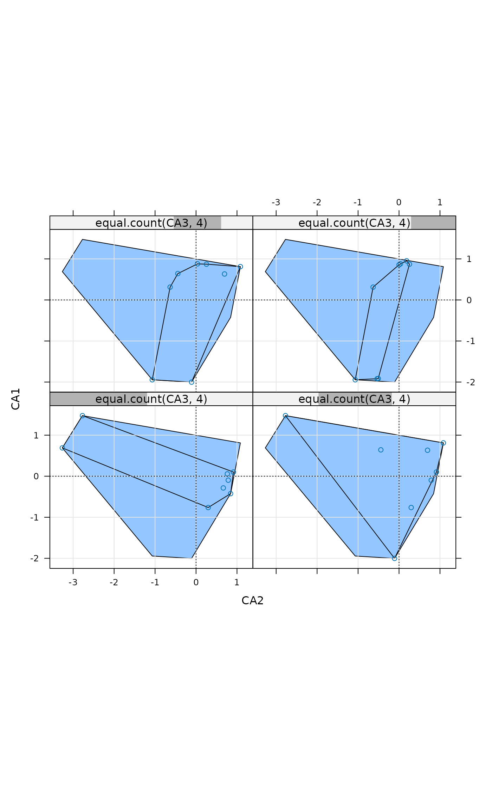
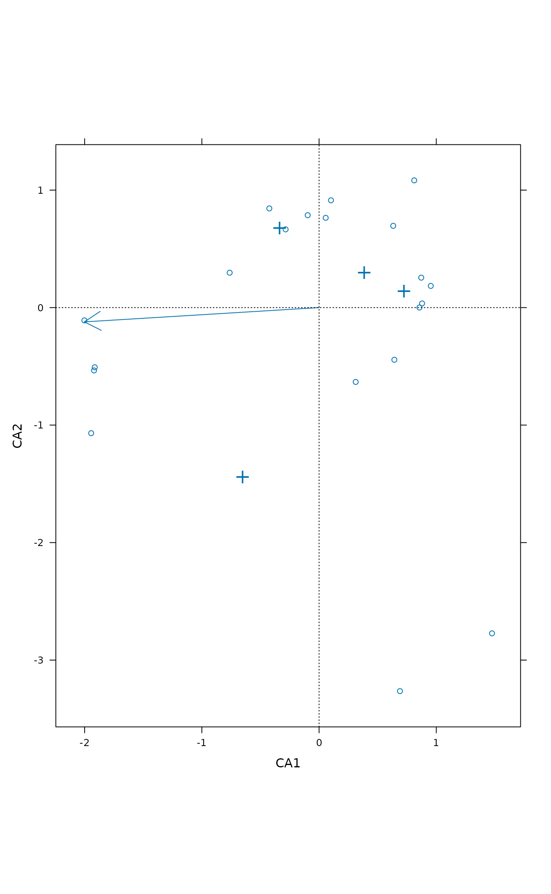

Trellis (Lattice) Plots for Ordination
ordixyplot.RdFunctions ordicloud, ordisplom and ordixyplot
provide an interface to plot ordination results using Trellis
functions cloud, splom
and xyplot in package lattice.
Usage
ordixyplot(x, data = NULL, formula, display = "sites", choices = 1:3,
panel = "panel.ordi", aspect = "iso", envfit,
type = c("p", "biplot"), ...)
ordisplom(x, data=NULL, formula = NULL, display = "sites", choices = 1:3,
panel = "panel.ordi", type = "p", ...)
ordicloud(x, data = NULL, formula, display = "sites", choices = 1:3,
panel = "panel.ordi3d", prepanel = "prepanel.ordi3d", ...)Arguments
- x
An ordination result that
scoresknows: any ordination result in vegan and many others.- data
Optional data to amend ordination results. The ordination results are found from
x, but you may give here data for other variables needed in plots. Typically these are environmental data.- formula
Formula to define the plots. A default formula will be used if this is omitted. The ordination axes must be called by the same names as in the ordination results (and these names vary among methods). In
ordisplom, special character.refers to the ordination result.- display
The kind of scores: an argument passed to
scores.- choices
The axes selected: an argument passed to
scores.- panel, prepanel
The names of the panel and prepanel functions.
- aspect
The aspect of the plot (passed to the lattice function).
- envfit
Result of
envfitfunction displayed inordixyplot. Please note that this needs samechoicesasordixyplot.- type
The type of plot. This knows the same alternatives as
panel.xyplot. In additionordixyplothas alternatives"biplot","arrows"and"polygon". The first displays fitted vectors and factor centroids ofenvfit, or in constrained ordination, the biplot arrows and factor centroids ifenvfitis not given. The second (type = "arrows") is a trellis variant ofordiarrowsand draws arrows bygroups. The line parameters are controlled bytrellis.par.setforsuperpose.line, and the user can setlength,angleandendsparameters ofpanel.arrows. The last one (type = "polygon") draws a polygon enclosing all points in a panel over a polygon enclosing all points in the data. The overall polygon is controlled bytrellis.par.setforplot.polygon, and each panel polygon is controlled bysuperpose.polygon.- ...
Arguments passed to
scoresmethods or lattice functions.
Details
The functions provide an interface to the corresponding lattice
functions. All graphical parameters are passed to the lattice
function so that these graphs are extremely configurable. See
Lattice and xyplot,
splom and cloud for
details, usage and possibilities.
The argument x must always be an ordination result. The scores
are extracted with vegan function scores so that
these functions work with all vegan ordinations and many others.
The formula is used to define the models. All functions have
simple default formulae which are used if formula is missing.
If formula is omitted in ordisplom it
produces a pairs plot of ordination axes and variables in
data. If formula is given, ordination results must be
referred to as . and other variables by their names. In other
functions, the formula must use the names of ordination scores and names
of data.
The ordination scores are found from x, and data is
optional. The data should contain other variables than
ordination scores to be used in plots. Typically, they are
environmental variables (typically factors) to define panels or plot
symbols.
The proper work is done by the panel function. The layout can be
changed by defining own panel functions. See
panel.xyplot,
panel.splom and
panel.cloud for details and survey of
possibilities.
Ordination graphics should always be isometric: same scale should be
used in all axes. This is controlled (and can be changed) with
argument aspect in ordixyplot. In ordicloud the
isometric scaling is defined in panel and prepanel
functions. You must replace these functions if you want to have
non-isometric scaling of graphs. You cannot select isometric scaling
in ordisplom.
Value
The function return Lattice objects of class
"trellis".
Examples
data(dune, dune.env)
ord <- cca(dune)
## Pairs plots
ordisplom(ord)

ordisplom(ord, data=dune.env, choices=1:2)
 ordisplom(ord, data=dune.env, form = ~ . | Management, groups=Manure)
ordisplom(ord, data=dune.env, form = ~ . | Management, groups=Manure)
 ## Scatter plot with polygons
ordixyplot(ord, data=dune.env, form = CA1 ~ CA2 | Management,
groups=Manure, type = c("p","polygon"))
## Scatter plot with polygons
ordixyplot(ord, data=dune.env, form = CA1 ~ CA2 | Management,
groups=Manure, type = c("p","polygon"))
 ## Choose a different scaling
ordixyplot(ord, scaling = "symmetric")
## Choose a different scaling
ordixyplot(ord, scaling = "symmetric")
 ## ... Slices of third axis
ordixyplot(ord, form = CA1 ~ CA2 | lattice::equal.count(CA3, 4),
type = c("g","p", "polygon"))

## Display environmental variables
ordixyplot(ord, envfit = envfit(ord ~ Management + A1, dune.env, choices=1:3))

## 3D Scatter plots
ordicloud(ord, form = CA2 ~ CA3*CA1, groups = Manure, data = dune.env)
## ... Slices of third axis
ordixyplot(ord, form = CA1 ~ CA2 | lattice::equal.count(CA3, 4),
type = c("g","p", "polygon"))

## Display environmental variables
ordixyplot(ord, envfit = envfit(ord ~ Management + A1, dune.env, choices=1:3))

## 3D Scatter plots
ordicloud(ord, form = CA2 ~ CA3*CA1, groups = Manure, data = dune.env)
 ordicloud(ord, form = CA2 ~ CA3*CA1 | Management, groups = Manure,
data = dune.env, auto.key = TRUE, type = c("p","h"))
ordicloud(ord, form = CA2 ~ CA3*CA1 | Management, groups = Manure,
data = dune.env, auto.key = TRUE, type = c("p","h"))